AZAL
THE SHORT KURTA COLLECTION
WINTER · SPRING 2027 / LOOKBOOK FOR APPROVAL
The idea
Earth,
texture
and one
silver flower.
1. Short, modern, easy. A hip-length kurta with a mandarin collar and wide trousers. No costume, just a good fit.
2. Texture is the decoration. Crisp slub meets soft smooth cloth in the same colour. Embroidery only where it earns its place.
3. One emblem, always in the same place. The AZAL flower sits on the left chest and nowhere else. It is the signature, not a fastener.
Why this, why now
Quiet luxury and linen tailoring lead menswear for spring/summer 2027, with Mao and band collars, open waistcoats and layering. Short kurta sets are the fastest-growing silhouette in South Asian menswear, but most of what we saw is occasion-led and heavily embellished. The gap is a calm, textured, everyday short kurta from a brand with its own signature.
Sources reviewed: Vogue and Style Arcade SS27 reports, quiet-luxury and linen co-ord boards on Pinterest, short-kurta videos on TikTok and Instagram, Republic by Omar Farooq and Edenrobe co-ord ranges. Mostly South Asian sources; Pakistan-specific sample is small.
AZAL · LOOKBOOK
The materials
Our cloth, our flower.
Everything in this book is made from the AZAL fabrics already in stock. Crisp slub cloths hold shape (collar, yoke, body). Soft smooth cloths drape (sleeves, trousers, waistcoat).
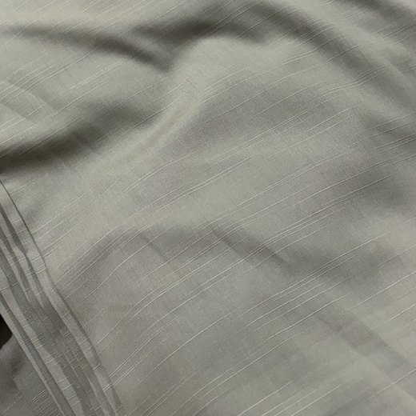
Olive slubCRISP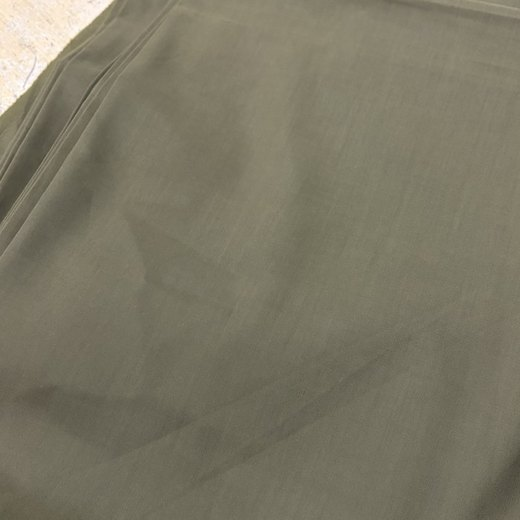
Olive smoothSOFT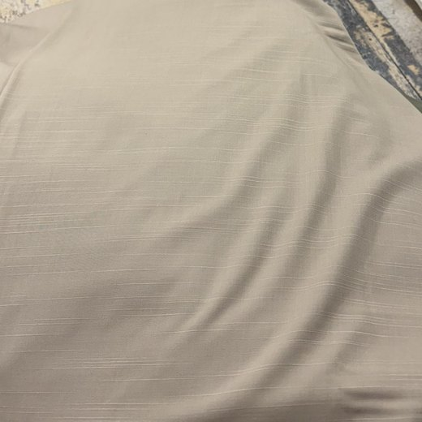
Sand slubCRISP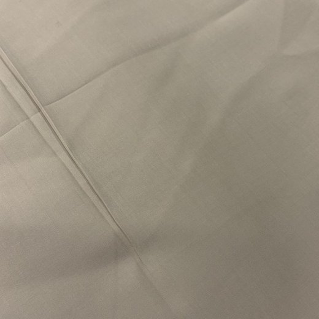
Khaki smoothSOFT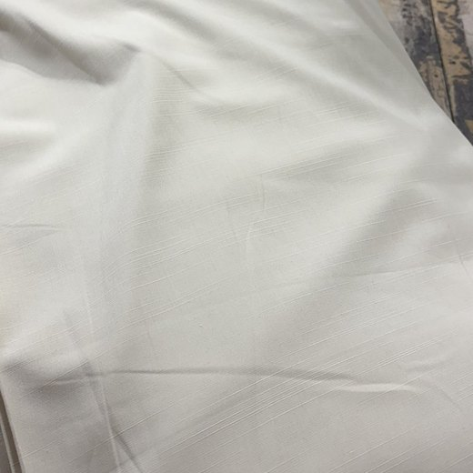
Ivory slubCRISP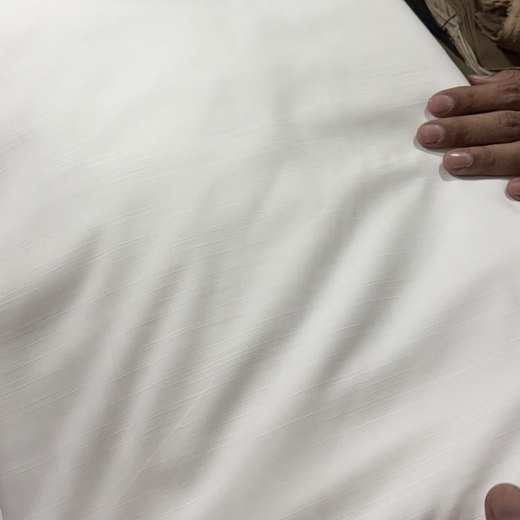
White slubCRISP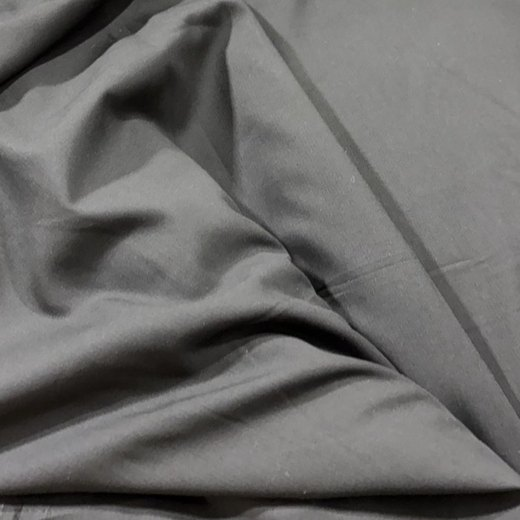
Black smoothSOFT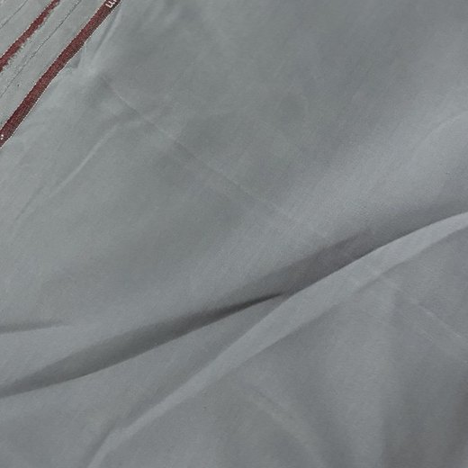
Slate smoothSOFT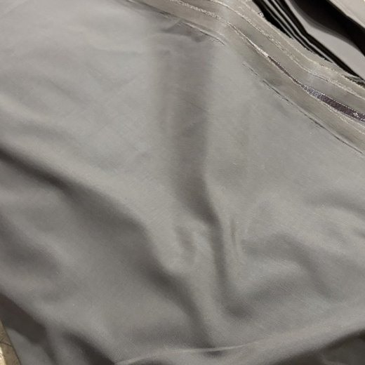
Taupe smoothSOFT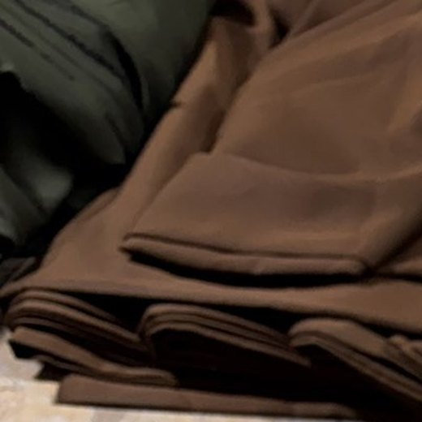
Clay brownSOFT
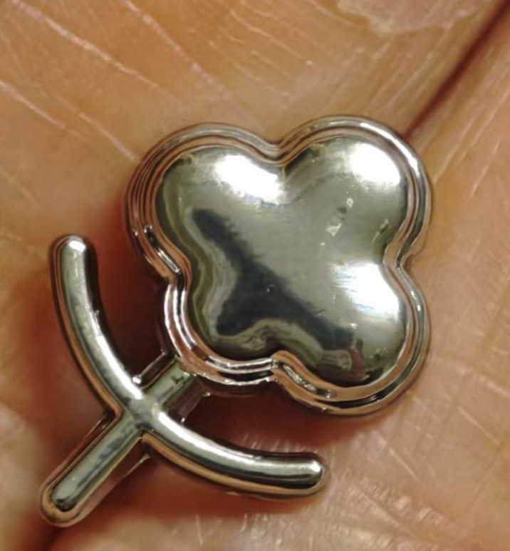
The emblem
One flower.
One place.
Polished silver, about 20 x 22 mm. Always on the wearer's left chest, 11 cm below the shoulder-neck point and 8 cm from the placket edge. A decorative mark only: never a button, zip pull or clasp.
AZAL · LOOKBOOK
LOOK 01
BLOCK
Two textures. One colour.
Один цвет, две фактуры
KurtaOlive slub (crisp) body
Yoke, sleeves, trousersOlive smooth (soft)
Details
- Mandarin collar, concealed placket
- Soft yoke and sleeves, crisp body
- Wide-leg pleated trousers, side pockets
OccasionSmart everyday · office · dinner
Indicative price, PKR8,500 – 10,500
The structure of a shirt, the drape of a kurta. One calm colour, two textures: nothing like it on the rack.
AZAL · LOOKBOOK
LOOK 02
DRIFT
The shoulder line.
Линия плеча
KurtaSand slub (crisp)
TrousersKhaki smooth (soft) wide-leg
Details
- Row of tonal buttons along the shoulder seam
- Mandarin collar, rolled sleeve
- Side slits, relaxed pleated trousers
OccasionDay events · travel · casual Eid
Indicative price, PKR8,500 – 10,000
A quiet detail that photographs well. The buttons follow the shoulder line, so no embroidery is needed.
AZAL · LOOKBOOK
LOOK 03
LAYER
The modern waistcoat.
Современный вескот
KurtaBlack smooth (soft) kurta
Waistcoat and trousersSlate grey-blue open waistcoat, black trousers
Details
- Hip-length open waistcoat, one hook at the chest
- Black short kurta, concealed placket
- Tonal, clean, no embellishment
OccasionEvening · dinner · smart wedding guest
Indicative price, PKR13,000 – 16,000 (3 pieces)
Pakistan already loves the waistcoat. We re-cut it shorter, open and tonal. Two pieces sell as one set and raise the basket.
AZAL · LOOKBOOK
LOOK 04
IVORY
Quiet embroidery.
Тихая вышивка
KurtaIvory slub (crisp)
TrousersMocha-taupe smooth (soft) wide-leg
Details
- Tone-on-tone thread work only on collar, placket, cuffs
- Same colour as the cloth
- Mandarin collar, side slits
OccasionEid morning · Jummah · family lunch
Indicative price, PKR8,000 – 10,000
Embroidery only where it counts and in the colour of the fabric. Festive without shouting, the old-money way.
AZAL · LOOKBOOK
LOOK 05
CLAY
Clay and ease.
Глина и лёгкость
KurtaClay-brown smooth (soft)
TrousersSame fabric, drawstring wide-leg
Details
- V-split stand collar
- Rolled sleeves, drop shoulder
- Drawstring wide trousers, flowing drape
OccasionWeekend · resort · summer evenings
Indicative price, PKR7,500 – 9,500
Clay and chocolate are the colours of the season. An easy two-piece at the entry price, built for repeat purchase.
AZAL · LOOKBOOK
SIDE A / SAND SLUB
SIDE B / BLACK SMOOTH
LOOK 06
TWO-FACE
Two kurtas in one.
Две курты в одной
Kurta
Reversible: sand slub outside, black smooth inside
Details
Cuffs fold back to show the other side. Plain snaps. Flat-felled seams, no raw edges. Khaki wide-leg trousers.
Occasion
Day to night · travel · gifting
Indicative price, PKR
9,500 – 12,000
Sand for the day, black for the evening, the same silver flower on either side. One piece, two outfits, and an obvious gift.
AZAL · LOOKBOOK
The edit
Six looks. One signature.
01 BLOCK
02 DRIFT
03 LAYER
04 IVORY
05 CLAY
06 TWO-FACE
How the range works
Core: BLOCK and IVORY (the signature textures). Seasonal: LAYER (adds the waistcoat for winter and wedding season). Colour: CLAY (entry price, high repeat). Detail: DRIFT. Gift: TWO-FACE.
All six share the same cut family, the same wide trouser and the same emblem rule, so patterns and sampling are shared.
AZAL · LOOKBOOK
Next step
If you approve,
we build the tech pack.
The tech pack will include
- Final flat sketches: front, back, details, with measurements
- Size set S to XL with grading
- Fabric consumption per piece
- Bill of materials: fabric, thread, interlining, labels, snaps, zips
- Emblem placement template and fixing method
- Construction notes, stitching and finishing
- Sampling plan with fitting checkpoints
We need from you
- Which looks go to sample (all six, or a first drop of three)
- Any change to cut, length or colour
- Fabric quantities available per colour
- Target cost per piece, to confirm prices
- Emblem back type (post or shank) from the supplier
About these images. All photos are AI visualisations created from AZAL fabric photos and the physical emblem. Fit, drape and fine detail are confirmed at sample stage. On full-length images the emblem is drawn approximately; the close-up images use the real emblem. Prices are indicative and must be checked against cost.
AZAL · LOOKBOOK